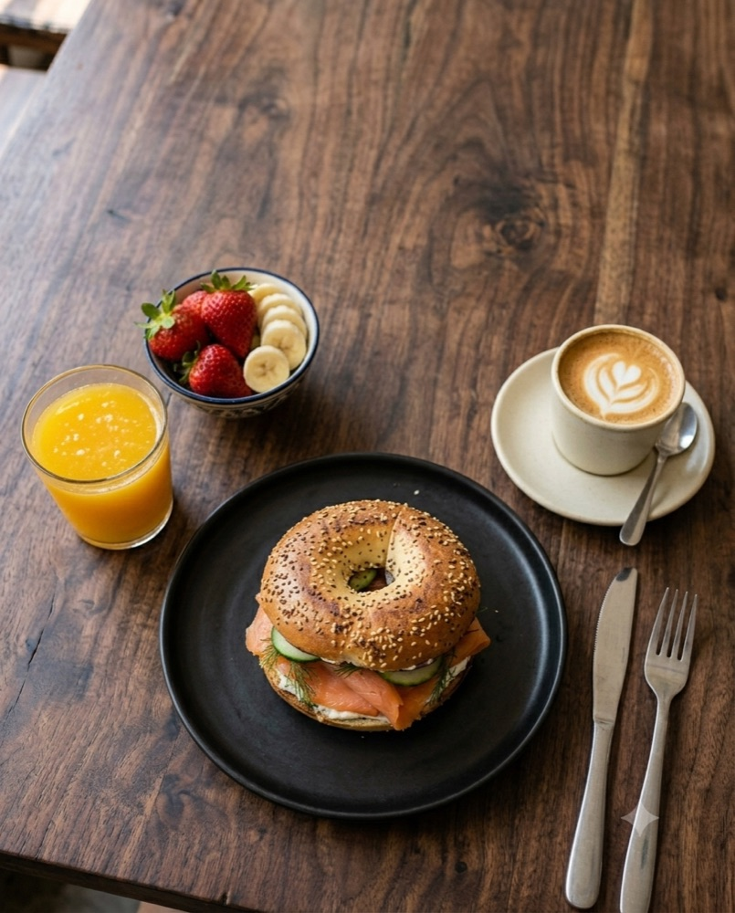
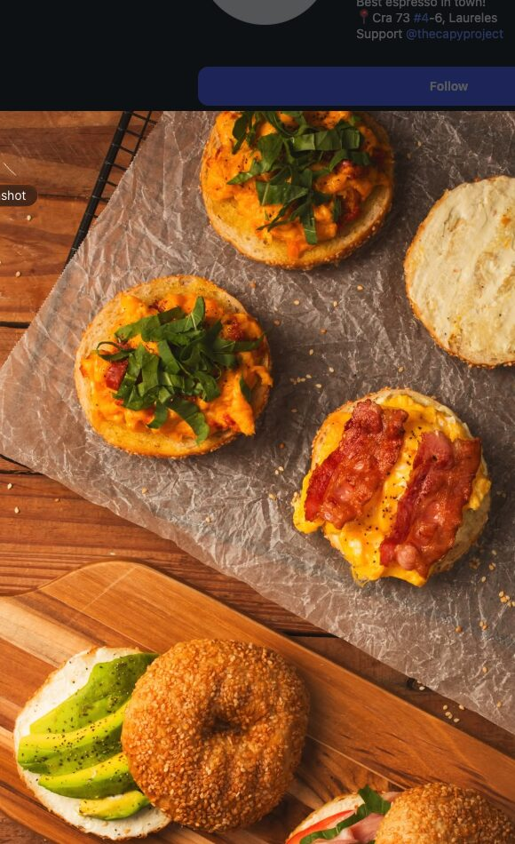
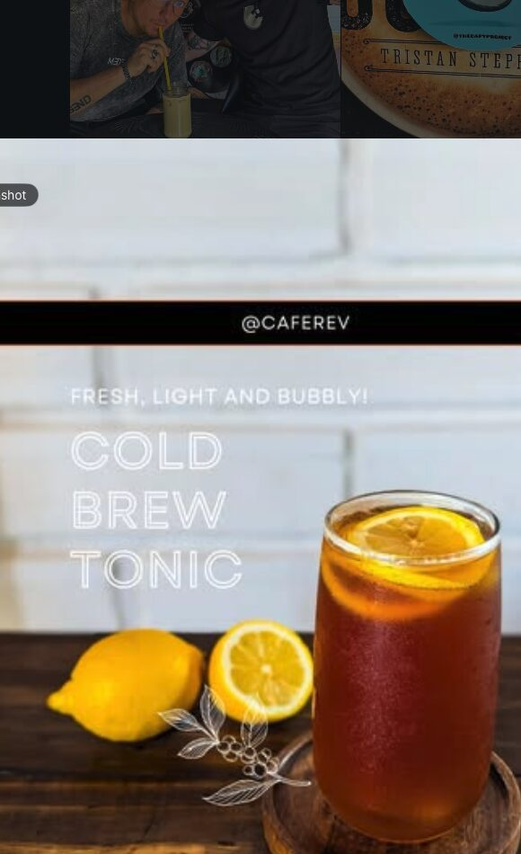
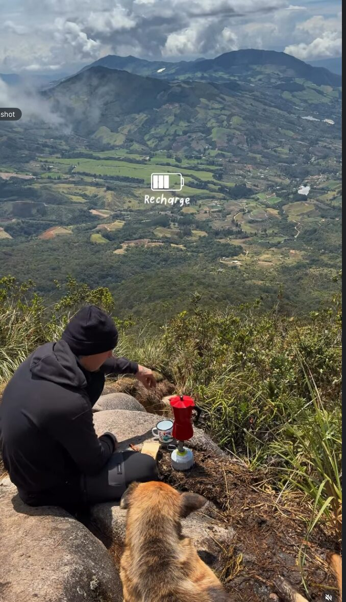
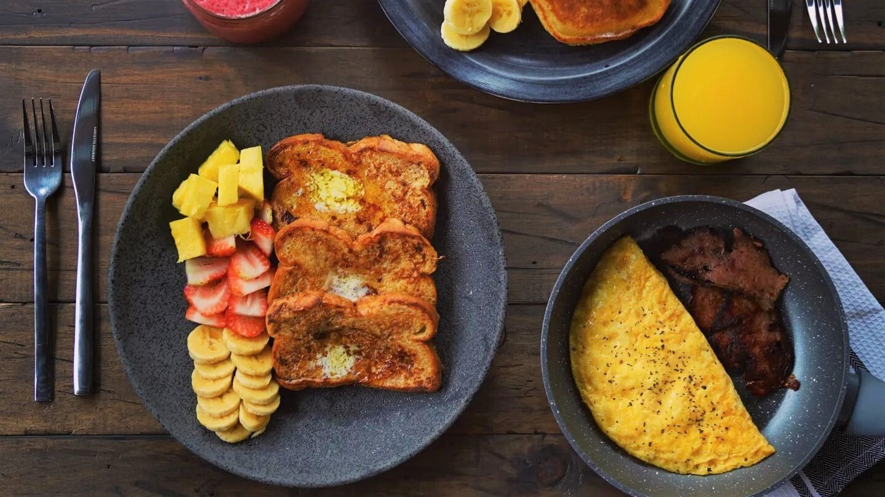
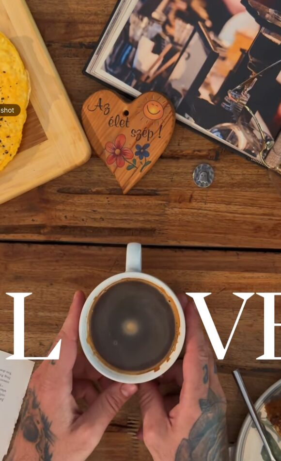
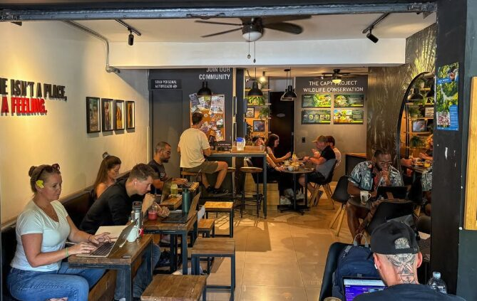
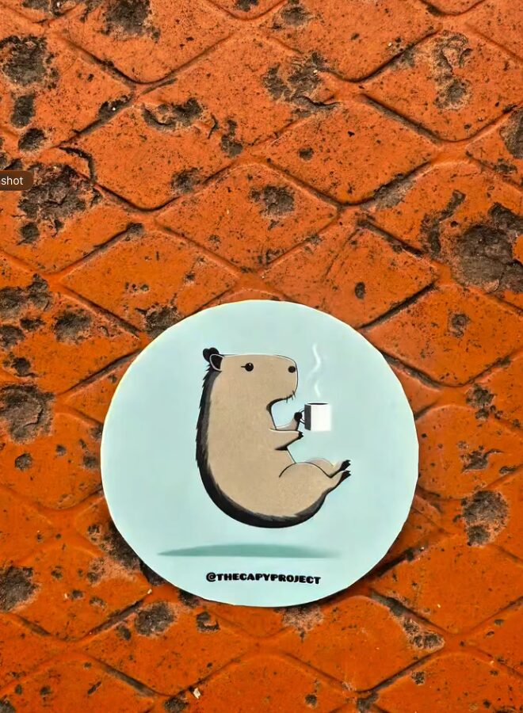

Estrella de la casa
Smoked Salmon Bagel
Bagel tostado, queso crema, salmón ahumado premium, eneldo fresco, pepino, cebolla morada y un toque de limón. La razón por la que mucha gente vuelve.
Brunch todo el día. Bagels al estilo neoyorquino, omelettes generosos, café de origen, y domicilios para que comas rico sin moverte. Vení, pedí, o llevátelo.All-day brunch. NY-style bagels, hearty omelettes, single-origin coffee, and delivery so you can eat well without leaving the house. Drop by, order in, or take it to go.




Smoked Salmon Bagel Tabla para compartir Cold brew tonic Del barrio a la montañaPorciones grandes, productos frescos, recetas que no escatiman. Bagels horneados en casa con un partner neoyorquino, omelettes que llenan, y postres que se acaban antes del mediodía.Generous portions, fresh ingredients, recipes that don't cut corners. Bagels baked in-house with a New York partner, omelettes that fill you up, and desserts that disappear before noon.

Y mucho más en la carta del día · pancakes, huevos benedictinos, ensaladas, jugos naturales. Pregúntale a Capy.
El Rev no termina cuando salís de la tienda. Lo armás afuera, en la finca de un amigo, en un páramo, en un trail antes del amanecer. Para nosotros el café no es solo una bebida · es una excusa para parar, mirar el paisaje, y volver a vos mismo.
Por eso seleccionamos granos de origen colombiano, los tostamos pensando en cómo van a viajar, y vendemos café molido o en grano para que te lo lleves donde sea que vayas. Y por eso apoyamos The Capy Project · la naturaleza que disfrutamos también necesita gente que la cuide.
No hay día malo cuando hay café, monte, y silencio.
Trabajamos con granos de origen colombiano, tostado fresco, y baristas que respetan cada extracción. Si querés probar algo distinto, pedí el cold brew tonic. Fresco, ligero y con burbujas.

Llevamos el brunch hasta tu casa, oficina, o coworking. También podés pasar y recoger tu pedido en menos de lo que tardás en parquear.
Abrí el chat con Capy acá mismo. Te ayuda a armar el pedido y te confirma disponibilidad y total al instante.
Elegís: te lo llevamos al portón, o lo recogés en la tienda sin esperar fila. Sin sorpresas en el precio.
Listo. Empacado bien, todavía calientito, con la misma porción generosa que vas a encontrar acá adentro.
Un café de barrio, no una franquicia. Mesas comunales, plantas, música que no te grita, y gente que se queda. Trabajamos como casa propia: si necesitás un enchufe, hay; si querés quedarte a leer, quedate.
El sitio es paisa de raíz, abierto a todos los que llegan: vecinos, expats, parches de fin de semana, gente sola con su libro. Acá te conocemos por nombre la segunda vez.


No usamos al capibara solo porque es bonito.
Una parte de lo que vendés acá termina en The Capy Project Foundation, un santuario de vida silvestre en Orocué, Casanare. Protegen capibaras, jaguarundis, babillas, y flora local que sin gente que la cuide ya no estaría.
Si te gusta el café, también te gustó saber esto. Si querés conocerlos, seguilos:
@thecapyproject en InstagramCapy arma el pedido con vos, te confirma disponibilidad, y coordina con Zsolt si hace falta algo a mano.